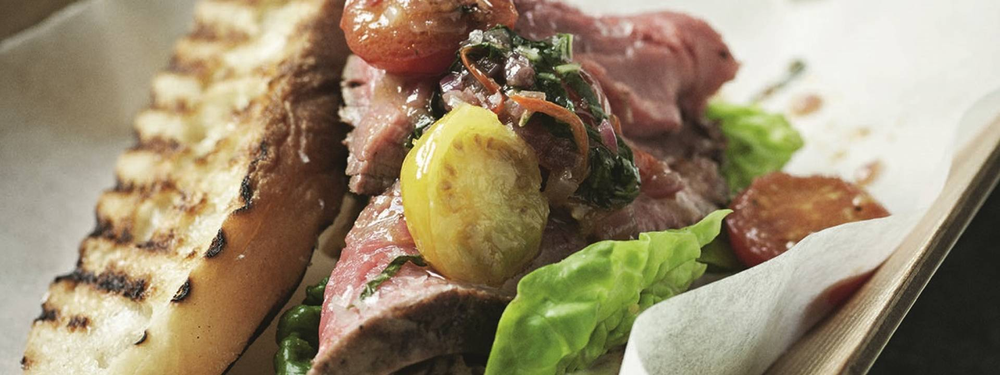

Steak Sandwitches

Description
The following is a steak sandwitch recipe based on the recipe by Gordon Ramsey
I've used this recipe several times for my wife and I, including last Christmas! I find this recipe to be absoutely delicious! Differently worth the time and effort!
Ingredients
- 1 lb Fillet Steak
- 1 lbs cherry tomatoes
- 1 whole head Garlic
- 1/2 cup Honey Mustard
- Rosemary Bread
- Basil
- Thyme
- Rosemay
- Salt, Pepper
- Butter
- 1 baby lettuce
Steps
- Preheat the oven to 200°C
- Heat a large ovenproof frying pan until hot and add a glug of oil. Grind a generous amount of salt and pepper onto a board and roll the fillet in the seasoning. Fry over a high heat for 2 minutes on each side until gently coloured all over, including the ends. Add the garlic and thyme sprigs, heat for a minute, then sit the beef on top of them. Add a couple of knobs of butter, spooning it over the steak to baste.
- Place the beef in the preheated oven and roast for 15 minutes until rare or medium rare. It should feel springy when pressed. Remove from the oven, cover loosely with foil and leave to rest for 15 minutes, basting now and again with the juices from the pan.
- Meanwhile, make the relish. Heat the olive oil in a large frying pan, add the onion and chillies and fry over a medium heat for about 5 minutes until softened. Stir in the tomatoes, then season and cook for 8 minutes until the tomatoes are beginning to collapse. Add the vinegar and stew down over a medium heat for about 6 minutes until reduced to a rough relish consistency. Remove from the heat, stir in the basil and season well. Tip into a serving bowl and set aside.
- Combine the ingredients for the mustard mayonnaise. Season, then spoon into a serving bowl and set aside.
- To make the toast, heat a griddle pan until smoking hot. Drizzle the sliced ciabatta with the olive oil, season and then griddle for 2 minutes until golden on both sides. Repeat until all the bread is toasted and then place on a serving platter.
- To serve, thickly slice the rested fillet of beef, place on a platter and put on the table with the toast, mayonnaise, relish and lettuce leaves to be assembled by your guests./li>